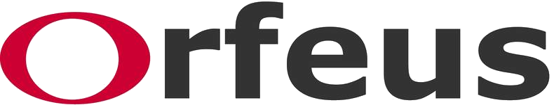

Information
HADES (Heterogeneous Anomalies in Deep Earth Structures) is built using various global tomographic models. The models describe Vp or Vs anomalies from an average ambient mantle velocity. This interface is made to facilitate the discovery and visualization of mantle anomalies. In the figures, blue and red regions represent fast and slow seismic velocities respectively.
For interpretations of observable mantle structures refer to the 🌎 Atlas of the Underworld.
Method
Cross sections are recovered from evenly spaced points on the requested geodesic line. Depths are sampled from the chosen model at regular intervals ranging until roughly 2800 kilometers depth. The sampled points are subject to a trilinear interpolation from the eight closest grid points provided by the model. The chosen interpolation is practical and introduces errors lower than are inherent to tomographic models.
The tomographic models are indexed for fast grid searching and hosted on a remote server.
Models
The following models are supported by the application:
- UUP07 (Amaru et al., 2007)
- SP12RTS-S and SP12RTS-P (Koelemeijer et al., 2016)
- MITP08 (Li et al., 2008)
- HMSL-S06 and HMSL-P06 (Houser et al., 2008)
- GYPSUM-S and GYPSUM-P (Simmons et al., 2010)
- GAP-P4 (Obayashi et al., 2013 & Fukao and Obayashi, 2013)
Citation
The HADES Underworld Explorer and its source code can be cited using the following digital identifier: 10.5281/zenodo.2587524.
Other References
- Amaru, M.L., 2007, Global travel time tomography with 3-D reference models: Geologica Ultraiectina, v. 274, 174 p.
- Fukao, Y., & Obayashi, M. (2013). Subducted slabs stagnant above, penetrating through, and trapped below the 660 km discontinuity. Journal of Geophysical Research: Solid Earth, 118(11), 5920–5938. (10.1002/2013jb010466)
- Hall, R., and Spakman, W., 2015, Mantle structure and tectonic history of SE Asia, Tectonophysics, v. 658, p. 14-45.
- Houser, C., Masters, G., Shearer, P., & Laske, G. (2008). Shear and compressional velocity models of the mantle from cluster analysis of long-period waveforms. Geophysical Journal International, 174(1), 195–212. (10.1111/j.1365-246x.2008.03763.x)
- Koelemeijer, P., Ritsema, A. Deuss, van Heijst, H.-J., 2016, SP12RTS: a degree-12 model of shear- and compressional-wave velocity for Earth's mantle, Geophy. J. Int, Vol. 204(2), 1024-1039 (10.1093/gji/ggv481)
- Li, C., van der Hilst, R. D., Engdahl, E. R., & Burdick, S. (2008). A new global model for P wave speed variations in Earth's mantle. Geochemistry, Geophysics, Geosystems, 9(5) (10.1029/2007GC001806)
- Obayashi, M., Yoshimitsu, J., Nolet, G., Fukao, Y., Shiobara, H., Sugioka, H., … Gao, Y. (2013). Finite frequency whole mantlePwave tomography: Improvement of subducted slab images. Geophysical Research Letters, 40(21), 5652–5657. (10.1002/2013gl057401)
- Simmons, N. A., Forte, A. M., Boschi, L., & Grand, S. P. (2010). GyPSuM: A joint tomographic model of mantle density and seismic wave speeds. Journal of Geophysical Research, 115(B12). (10.1029/2010jb007631)
- Van der Meer, D.G., van Hinsbergen, D.J.J., and Spakman, W., 2017, Atlas of the Underworld: slab remnants in the mantle, their sinking history, and a new outlook on lower mantle viscosity, Tectonophysics. (10.1016/j.tecto.2017.10.004)
Disclaimer and Usage Policy
The source code for HADES is open and availble from GitHub and licensed under ⚖ MIT. It may be freely used, distributed, and modified. In no event shall this application or any data providers be liable for any damages caused by, but not limited to, erroneous data or results. We kindly remind you to cite all sources.
Contact
Suggestions and problems can be forwarded to .
Developed in collaboration with
